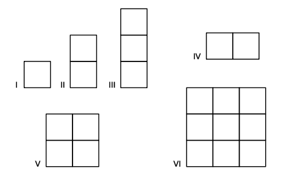

Беседа 707 от 3877 · Беинса Дуно
Моралният тип
Само светлият път на Мъдростта води към Истината.
Тя постоянно ни весели!
Размишление.
Прочете се резюме от темите „Отношението между моралните чувства и умствените способности“.
(На черната дъска е поставена една нарисувана картина – глава, която представлява един морален тип.)
Всички съгласни ли сте с този образ в картината? По какво се отличава моралният тип? Кои са външните черти? Как познавате дали някой човек е морален или не? Все-таки трябва да имате една мярка, колкото и да е малка.
Всички трябва да си служите с ония методи, с които природата си служи.

Във всеки даден момент вие трябва да разбирате каква е посоката на вашия ум. Вие трябва да разбирате не само посоката на вашия ум, но едновременно и посоката на вашето сърце – накъде се движат вашите чувства. Чувствата са също тъй сили в природата. Най-първо трябва да разгледате умствения и чувствения свят като движение на живи сили в природата. В потънкости няма да се спирате. Проучвайте закона на тия сили, при какви условия се развиват чувствата. За пример, аз мога да повдигна между двама ви ревност. Даже и между тия, които са най-благородни, и между тях може да се повдигне ревност. Ревност може да се повдигне и между сестриче и братче. Майката може да повдигне цял скандал, ако направи на братчето по-хубави дрехи, а на сестричето по-лоши. Ако майката не внимава, непременно ще се породи ревност. Ако вие не разбирате законите в света, около вас постоянно ще се създават условия за ревност. Разбира се, майката ни най-малко няма да създаде умишлено един спор или една разпра между децата. Някой път тя е повече привързана към момченцето, отколкото към момиченцето и от това изниква ревността. Така е, момченцата са повече обичани. Туй е раздвояване в чувствата. Като се роди момче, считат го за благословение. Има други случаи, когато момичето е „добре дошло“. Когато са дошли 4–5 братя, тогава и братята посрещат момичето с радост и казват: Да имаме едно сестриче! Бащата, ако има двама сина, не мисли за тях как ще ги нареди, но ако има две дъщери, почва да мисли.
Сега, вие не трябва да давате личен характер на вашите чувства. Вие ще ги изучавате като сили, като движения в природата. Защото щом влезе тази сила в тялото ви, тя ще произведе едно или друго влияние. Следователно силата и посоката на вашия ум ще се определи от степента на вашите чувства. Ако в чувствата си сте развълнувани, вашият ум не може да мисли спокойно. Непременно чувствата ви трябва да бъдат интензивни, но спокойни, т.е. да има хармония между тях. Не разбирам да се удоволствате, то е външната страна на сърцето, но да дадете подтик на вашето сърце към работа. Има чувства, които лишават човека от работа, създават леност в него. Такива чувства се зараждат у богатите хора. Дъщерята и синът казват: Баща ни е богат, ние можем и без учение и без знание. У тях знанието е повърхностно.
Знаете ли сега накъде е обърнат вашият прозорец? На юг, на север, на изток или на запад? Лъчите на светлината имат различно влияние. Те се различават по това, отде идват – дали от юг, от север, от изток или от запад. Различават се по теченията в тях: има едно електрическо течение и едно магнетическо, което върви от изток към запад; има друго едно течение, пак електрическо и магнетическо, което иде от север към юг, на което има и обратно течение. Тия две течения се прекръстосват. Ако някой път вие попаднете на течението от изток към запад и приемате тази светлина, вие ще придобиете по-голяма сухота. Астролозите казват тогава, че върху вас идва повече влиянието на Сатурна. Тогава вие ще обичате светлината, но ще станете много взискателни, ще гледате да намерите погрешка в този, в онзи. Ако пък приемете светлината от север, ще обичате Истината, но ще станете чрезмерно студени и хладнокръвни, тъй че няма да се интересувате за страданията на хората. Ако вие възприемете светлината от юг, у вас ще се роди една топлота и разширение, но има друга една опасност – ще станете мекушав и гъвкав. За такъв човек турците казват: Той може да се спогоди с всички хора. Дето и да иде, той може да прекара добре. Всичко прави, на всички угажда: и месо яде, и винце пие, и леща яде – навсякъде се бута. Такъв човек ще изпадне в положението на Настрадин Ходжа, който си направил една пещ, но дохожда някой и му казва: Защо си я обърнал към изток? – Ами накъде? – Към запад, по-хубаво гори. Обърнал я той на запад. Идва друг: Онзи, който ти каза да я обърнеш към запад, толкова разбира той, не знае ли – към север гори по-хубаво? Обърнал я Настрадин Ходжа към север. Трети идва и му казва да я обърне на юг. Обръща я на юг. После, за да угоди на всички взима, една кола с четири колелета и направо върху нея пещта. Дойде някой, той го пита: Накъде искаш да бъде обърната пещта – На север. Обръща колата на север. Дойде друг, пита го: Накъде искаш да бъде обърната пещта? – На запад. Обръща я на запад. Каквото положение искат, това прави и на всички угажда.
Често характерът у някои хора е такъв, като пещта на Настрадин Ходжа – на колелета. Този човек вие наричате умен. Когато моралният характер вземе такъв израз, човек се демагнетизирва, колкото и да е силен. Ако вие турите на едно растение тор повече, отколкото може да асимилира, туй растение прегаря, изсъхва. Лошите влияния на хората някой път може да ни подпушат. Никой в света не е толкова силен, щото във всички моменти да може да отбие злото. Затуй, именно, още в тази възраст, в която сте, трябва да проучвате силите в природата. В природата има разрушителни сили, които действат и върху сърцето, и върху ума. Много ваши желания имат характер на бомба. Много ваши мисли могат да имат същия разрушителен характер. Ако вие бутате такова едно желание, ще бъдете тъй внимателни, както един техник бута една бомба. Тя съдържа пироксилин, не трябва, да я бутате. Който е взел тази бомба, да я изнесе надалеч, на два километра и там да я остави. Заминете си, не човъркайте това желание! Имате някоя лоша мисъл, не я човъркайте! Това, което казва Христос: „не противи се злому“, подразбира: не изследвай, не човъркай злото. Вие трябва да имате всичкото знание, за да можете да боравите с всяко зло. Не само вие, но и много окултисти, които се занимават с тази опасна област, пострадват. Затова обръщам ви внимание на моралната страна. Човек трябва да стане морално силен, духовно силен. Любовта трябва да бъде един от главните елементи в неговата душа. Любовта трябва да бъде силна, за да могат всички други елементи да се хармонират с нея. Защото по някой път може да се зароди в душата ви едно вътрешно разколебаване раздвояване, съмнение, недоволство. Те ще дойдат но тогава вие ще си създадете работа – ще работите. Те сами по себе си ще дойдат – и при най-големите мъчнотии, и при най-благоприятните условия. Правени са такива опити. И с вас може да направят това – да ви поставят в една стая с всички удобства, при все това пак ще се яви у вас едно малко недоволство. Вие трябва да знаете как да се справите с това недоволство. И ако няма кой да ви ръководи и упътва, във вас веднага ще се яви песимизъм.
Следователно в такива моменти, при едно недоволство от живота, вие трябва да имате светлина. Вие трябва да имате едно упътване, да знаете как да използвате тия отрицателни сили. Защото отрицателните сили в природата могат да бъдат и за ваше добро. Трябва да знаете, че външният свят няма да ви посрещне с венци. Никого не посрещат тъй. Ако вие пуснете вашата кокошка всред София, как ще я посрещнат? Мислите ли, че тя ще се върне във вашия курник? – Не, тя ще влезе в някоя тенджера, ще я сварят и всичко се свърши с нея. Мислите ли, че ако пуснете някой ваш вол или кон всред София, ще се върне той при вас? – Не, ще изчезне някъде. Не само животните изчезват, но и хората изчезват. Не мислете, че вие сте свободни. Не сте свободни. Мислите ли, че сте свободни, това е една илюзия. Вие казвате: ние можем да направим всичко. Тогава задайте си задачата, да можете да победите тия малки мъчнотии в живота, които сега се създават. За пример, дойде у вас едно малко съмнение. Какви са вашите начини за побеждаване на съмнението? Да кажем, вие отричате всички пътища, казвате: бъдещ живот няма, правда няма, хората са безчестни. Или пък вие се обидите, разсърдите се нещо. Питам: в такъв случай какво трябва да правите? Задайте си въпроса: откъде черпя аз тия знания, че хората са лоши, че няма правда в света и т.н.? Каква е моята мярка? Имам ли основание в това? За да кажете, че всички хора са лоши, трябва да имате една мярка. Коя е тази мярка, с която мерите, че всичко считате илюзия? Ако всичко е илюзия, значи имате една мярка, с която мерите нещата. Коя е тази мярка? Вие туряте за мярка себе си. С това искате да кажете: Аз съм единственият добър човек, освен мен друг няма. Да, вие сте прави, но до вас има друг господин, който мисли също като вас. И той казва: Аз съм най-добрият човек. Един ден вие двамата се разберете. Най-първо допущате, че освен вас друг добър човек няма, но като намерите друг човек, който мисли точно като вас, казвате: Значи имало и друг добър човек. После намирате втори, трети, четвърти и т.н. Питам: ако вашата мярка е вярна, на какво основание допущате, че и те са добри? Щом има едно изключение, могат да влязат и много други изключения. Изключенията в разсъжденията на хората показват, че хората не са прави.
Но да се повърнем сега към моралния тип на картината. Вие приемате този тип за морален, нали? Но тъй, както е нарисуван, в него има едно разочарование. В устата му има едно недоволство от живота. После, брадата трябва ли да бъде така права? На брадата всякога трябва да има една малка вдлъбнатина, която показва устойчивост на чувствата, издържане в живота. Тази вдлъбнатина представлява долина, дето има растителност. Тя е място на извори. Следователно, ако устните са тънки, това показва, че гънките, през които идат водните източници, са малки. У такъв човек водите текат само тогава, когато вали дъжд, а през лятото всички реки пресъхват. Затова у хора с тънки устни изворите пресъхват лятно време. Такива хора и да искат много нещо да сторят, не могат. Някои пък казват: Защо устните ми са толкова дебели? – Недоволни са от това. Действително, дебелите устни са донякъде опасни защото като започнат да се топят снеговете, стават големи порои. Такива хора ние наричаме афектирани не можем да ги спрем от любов. Това не е любов, то е наплив на тази природна енергия. Любовта е нещо разумно, тя е една фина сила, тя е благородство, а това, което вие наричате любов, то е хала – всичко отнася, тя гори и разрушава. Ние смесваме тази гъста материя, тая интензивна сила с Любовта, и вследствие на това тази гъста материя ни поляризира, прави ни недоволни. У един морален тип лъчът, който излиза от окото, не трябва да бъде в хоризонтално положение с плоскостта на зрението, но трябва да образува един малък наклон нагоре, да има възходяща посока. Моралният тип същевременно е и интелектуален тип, има отличен ум. Човек, който няма отличен ум, не може да бъде морален. Има изключение, но всякога моралният или духовният човек има отличен ум, който ум се различава от ума на другите хора. После, колкото височината от ухото до края на темето на главата е по-голяма, толкова повече е в полза на моралния тип. Има изключение, но тази височина показва интензивност на моралните чувства. Следователно важни са дължините на двете линии: от окото до ухото (I) и от темето до ухото (II). Първата линия (I) определя силата на ума, а втората (II) определя интензивността на моралните чувства. Това е общо казано, в него има ред изключения, които може да се коригират. Според вас, какъв трябва да бъде носът на моралния човек? Челюстите на моралния тип не трябва да бъдат много издадени навън, че да образуват една крива линия. Пък и лицето не трябва да е много сплескано. Такива типове са повече пасивни, а моралният човек е умствено и духовно чрезмерно активен, той е готов на всяка услуга, той не е индиферентен, той е умен, знае да направи всяко нещо точно на времето си. Ако лицето му не е добре устроено, ако скулите, изпъкналостите под очите му са много издадени, както у китайците, тогава бузите хлътват навътре. Тая част на бузите е свързана със стомашната система. Това показва разстройство в стомаха. Широчината на скулите и лицето въобще не трябва да е много малка. За тази широчина има известна пропорция. Тя дава устойчивост на характера. Хора с тесни лица са устойчиви, а тия с много широките лица са много консервативни, не са прогресивни. Такъв човек докато се установи на нещо и докато тръгне, трябва да се впрегнат девет чифта биволи. Разбира се, има и изключения. Ако при такива скули челото е построено както у монголците, имате един консервативен тип. Бялата раса се отличава от монголската в умствено отношение. Челото на бялата раса е добре построено, то е почти еднакво широко и в горната, и в долната си част. У монголската раса тази част на лицето при скулите е по-широка, отколкото челото. Ако страните, скулите на лицето са издадени, това показва чувствената страна на човека. Скулите показват какви са неговите чувства, запаса, с който той разполага. От носа надолу долната част на лицето изразява волевия човек. Носът представлява духовния човек. От челото на човека пък съдим за неговия умствен калибър, как е развит той умствено. Долната част, брадата, показва как е развита волята у човека.
Вие трябва да нарисувате този тип в анфас, а не в профил. В един морален тип като се раздели лицето на три части – чело, нос и брада – те трябва да имат еднакви размери. Тия три линии трябва да бъдат еднакви. Защото ако челото е по-голямо – да кажем, че е 7 см, носът 6 см, а брадата 4 см, имате един неустойчив тип. Той мисли хубаво, чувства хубаво, но щом дойде до приложение, няма го. У някои индивиди може да имате обратното – челото 4 см, носът 6 см, а брадата 7 см – значи тук преобладава влиянието на волята. Тоз човек малко мисли, но много върши. И той като се добере до някоя идея, права или крива, ще я приложи в живота си. Той казва: Не ни трябва много философия в живота, но трябва да се прилага.
Та ще работите върху себе си. Някои от вас ще работят върху челото си, някои върху носа си, а други върху брадата си, върху волята. Някой казва. Аз възпитах волята си. За да възпиташ волята, трябва да работиш над долната част на лицето си. Ако в 2 години продължиш линията на брадата си с 1 мм, ти имаш воля. После, ако можеш да измениш носа и скулите си с 1–2 мм и това е пак воля. А това, дето казвате: Аз мисля че съм се поправил – то са празни работи.
Сега наблюдавайте себе си. Най-първо гледайте да измените вашия нос. За пример, носът на някои при ноздрите е тесен. Това показва, че дишането у вас е слабо – ще образувате по-силно дишане, ще разширите носа си с 1–2 мм. Успеете ли в това, то е вече едно подобрение, крачка напред. Дължината се поправя по-мъчно, но ширината по-лесно. Щом можете да измените носа си с 2 мм, това показва, че и вашата дихателна система е подобрена. После можете да подобрите и дължина на носа си с 1 мм. Като го продължите толкова, доста умствен багаж сте придобили. Когато пък развитието на дължината и широчината на носа се спре, тогава ще почнете да моделирате носа си. Тъй че вие може да видоизмените всяка част от лицето си. Някои от вас страдат от меланхолия. Забележете, у всички меланхолични типове носът започва да се извива навътре. Значи песимистичните състояния почват да извиват носа. Щом вашият нос почне да се изкривява, вие трябва да спрете това изкривяване. Как? – Ще промените мислите си. Не се обезсърчавайте. Добиете ли едно мрачно настроение, изхвърлете тези мрачни мисли. Никой не е роден песимист. На песимиста липсва надежда. Изхвърлете онази материя, която спира развитието на вашата надежда. Разработете вашето зрение и приятните състояния веднага ще дойдат. Не се водете по настроенията си. Как определих аз настроенията? –Настроението е ветропоказател; чувството – кладенец, извор; мисълта – река; разумността – градина с плодове, а принципът – Школата.
Имайте предвид, че това е една доста трудна работа–да работи човек като художник върху своето лице. Човек трябва да работи и да не се тревожи. Всяка тревога дава един особен отпечатък върху лицето на човека. Природата не обича хора, които се тревожат само. Тя не обича своенравните деца. Ако ти се спреш в една мъчнотия, то природата ще ти посочи начин как да се справиш. У нея има достатъчно воля да ти покаже начина, но тя иска ти сам да си разрешиш задачата. Тя може да те чака година, две, три, четири, десет, сто, хиляда години, но ще те остави сам да разрешиш за дачата си, тя няма да ти я разреши. Туй, което е твой дял, нито един косъм от него няма да засегне. И когато разрешиш задачата си, тя ще вземе втората стъпка, ще ти даде нова светлина. Упорстваш ли ти, и тя упорства. Както ти постъпваш, така и тя постъпва: щом ти мълчиш, и тя мълчи; ти не работиш и тя не работи. Тя има друг един метод: всички ония, които не искат да работят според нейните закони, тя им създава работа. Каква работа? – Не им дава богатство, но сиромашия им дава и ги кара да работят. После ще им даде един такъв ненаситен стомах, че да искат да ядат много, а да нямат възможност. У тебе ще има желание да ядеш и тя ще те накара да ходиш от врата на врата, да работиш, за да ядеш. У нея има всичкото изкуство. И в туй отношение вие трябва да се ползвате по някой път от светските хора.
Аз забелязвам, някои не разбират окултните закони. Те се проявяват отрицателно, с много отрицателни черти. Ще ви приведа един добър пример. Преди години аз срещнах един човек, който ми разправи следното: „Вложих 8000 лева в една бакалница, но пропадна бакалинът, изчезнаха и парите. Няма нищо, пак ще спечеля тия пари.“ И действително, срещам го след две години и ми казва: Спечелих парите пак. Друг някой би казал: „Отидоха ми парите“. А той казва: „Тия пари не са били мои, да са халал, човещина е. Добър е Господ, вместо да дойде на главата ми нещо лошо, нека върви на парите, аз ще спечеля пак.“ И този човек е весел и разположен.
Така постъпвайте и вие. Като ви дойде някоя мъчнотия, или като изгубите нещо, кажете си: Добър е Господ, ще спечеля пак. А вие се спирате и казвате: Защо да бъде тъй? В природата има един метод, тя ти казва: Дръж задачата, ще я научиш и разбереш защо е тъй. Тя, като ти даде някоя задача, не ти я обяснява, докато всичко не мине. Ако разрешиш една задача, тя дава втора, трета, четвърта. За всички велики умове е било тъй – когото и да срещне природата, все задачи дава. Вие мислите, че като разрешите една задача, друга няма да има. Колко други по-сериозни задачи има. Сега вие се намирате пред едни мъчнотии, след време тия мъчнотии ще ви се видят детски и пред вас ще се явят задачи още по-трудни и по-мъчни. И като разрешите и тях, тогава ще си зададете друг въпрос: Какъв е смисълът на живота? – В дадения случай смисълът на живота е да разрешите вашата задача – нищо повече. Аз ще ви запитам сега: какъв е смисълът на едно легло? – Да си легнете, да си починете. Какви трябва да бъдат качествата на леглото? – Да бъде мекичко. Ще кажете: Да има пружина, че като стана сутрин, гърбът да не ме боли, но да съм си отпочинал хубаво. После, стаята ми трябва да има достатъчно чист въздух, да има изобилно светлина, да няма миризми. Ще кажете: Не може ли без спане? Какъв е смисълът на спането? При сегашните условия спането е потребно. Ще дойде време, когато ще може и без спане, но сега спането е потребно, за да се набавят изгубените сили. В този живот се харчи повече и затова е необходимо да спите 7–8 часа, за да може тялото в това време да си набави тази енергия. Някой път настъпва една криза в живота ви. Защо? – За да си починете. Вие наричате тази криза загуба. Казвате: Аз загубих. Вие понякога мислите,че не чувствате. Що е чувстването? – Вие като чувствате, харчите, правите угощение. Затова и чувствата се нуждаят от почивка. Може да настане друга криза, да започнете да мислите, че никой не ви обича, че никой не ви разбира. То е една илюзия на вашия ум. Ако вашата ръка е станала толкова безчувствена, че като я подхване някой, вие не усещате нищо, кой е виноват, аз или вие? – Вие сте виновати. Но ако вашата ръка е толкова чувствителна, че отдалеч още усещате допиране, аз ли съм виноват? Казвате: Ама допря се до ръката ми. Не, не съм се допрял, но сте схванали допирането на моята мисъл. Значи, вие сте станали толкова чувствителни, че казвате: Аз не мога да търпя хората. Някои казват: ние не можем да търпим това общество. И тогава вашият астрален двойник може да излезе половин-един метър вън от вас и ще се намерите при едно от незавидните положения. При сегашното състояние на вашето развитие двойникът не трябва да излиза повече от един, даже половин сантиметър вън от тялото, защото средата, в която живеете, е груба. Този двойник е чрезмерно чувствителен и трябва да бъде близко до тялото. А пък колкото хората стават по-духовни, техните духовни тела започват да излизат от тялото им навън и тогава тяхната деятелност се разширява. За да се развива вашата деятелност, вие трябва да разбирате законите на вашето тяло.
Сега допуснете, че вашето тяло се разшири, 10–20 души ви обикнат, искат да дойдат близо при вас. Вие започвате да ги пъдите, казвате им да се махнат. Как мислите, няма ли да си създадете ред неприятности? Ще си създадете. Всеки човек, който дойде до вас има нужда от нещо. За него вие сте един извор.
Задоволете неговата нужда, дайте му да си напълни своето шише. Няма да взимате това в буквален смисъл, то е един символ само. С това искам да кажа: дайте на всеки един по една успокоителна мисъл. Спрете се в себе си и кажете комуто и да е по една интензивна мисъл, пожелайте доброто всекиму. Щом пожелаете една добра мисъл някому, вие можете да попаднете в друга погрешка, да се спрете и да си кажете: Дали моята мисъл отиде на мястото, дето я изпратих? Щом се концентрираш и изпратиш мисълта си, повече не се безпокой, тя ще отиде на мястото си. Но ако ти се спреш и си кажеш: Дали отиде или не, тя ще се спре и ще почне да витае из пространството. Има хиляди такива мисли. Въздухът е пълен с тях – навсякъде се срещат добри мисли, които не са отишли на своето предназначение. Те са писани и пратени, но адресът им е крив, че седят на пощата. Има Божествени пощи, в които след години вие ще намерите своите писма. Те чакат там с години, докато отидат на своето местоназначение.
Втори път като дойдете, ще поправите вашия морален тип. Какво ще му придадете, я ми кажете. Ето какво се забелязва в лицето на моралния тип: дали той е сериозен, загрижен или засмян, при всички условия на лицето му има известни черти, които не се менят. Основа има в лицето на такъв човек. Хора, у които моралните чувства не са развити, преди да се засмеят, може да са приятни, но щом се засмеят, в лицето им прозира нещо отвратително. В лицето на моралния тип има н устойчиво, около което всичко се групира. После, вие трябва да проучвате моралния тип от чисто физиогномическо гледище. В неговото лице има 2–3 гънки, които са особено сложени. Прочетете във физиогномията и вижте кои гънки са най-хубавите. Аз не искам да ви говоря за всички линии, защото при изучаване физиогномията има една опасност за вас. Тя седи в следното нещо. Ако аз ви говоря за патологическите черти на лицето, всеки, като се върне в къщи, ще ги търси по лицето си и кого как види, ще казва: И той е от тях. Лошото винаги се запечатва по-лесно. Вие ще виждате навсякъде само болни хора, затова е опасно да ви се показват отрицателните черти.
Друго нещо трябва да имате предвид: за да бъде една черта вярна, тя трябва да присъства едновременно на три места: на черепа, на лицето и на ръката. След това тя трябва да присъства на челото, на горната част на лицето, на скулите и на брадата. Най-малко трябва да има един общ признак на лицето и после на специалните части. Някой път известен признак съществува само на челото, тогава той е само в потенциално състояние, съществува като възможност. Някой път се среща на брадата – то е по отношение на волята. Но когато един недъг съществува едновременно на главата, на лицето и на ръката, този човек е грешил в миналото по ум, по сърце и по воля, той е една бомба – трябва да го барате с щипци или никак да го не закачате. Засега вие сте в процеса на вашето развитие, който още продължава, и отсега трябва да работите върху себе си. Човекът, докато е още в утробата на майка си, няма възможност да работи. Тогава майката работи, майката го моделира, той не е свободен. Но щом се родите, вие може да станете майка на себе си – ще работите както искате. Вие може да кажете: Това зависи от обществото. Не, всеки от вас може да извая от себе си такъв човек, какъвто иска, но за това се изисква светъл ум, благородно сърце и силна воля. Имате ли всичко това, може да направите каквото искате, но ще изучавате законите на природата. Преди да направите туй нещо, ще имате големи мъчнотии, но мъчнотиите не са лош признак. Това са плюсове за вас. Онзи човек, който има мъчнотии, спрямо него природата е по-благосклонна, отколкото спрямо човека, който няма мъчнотии. Такъв е великият закон. (– Има ли предел на развитие?) – Предел на развитие няма. Пределът ние сами си поставяме, по закона на внушението и наследствеността. Човек, като стане на 40–50–60 години, започва да казва: Остарях вече. Той сам си внушава и другите му внушават. По този начин той възприема мислите на всички стари хора и се солидаризира с тях. Не, ти трябва да се издигнеш над всички стари хора, да кажеш: Аз няма да остарея. Те казват: Остаряхме ние вече и сега трябва да умрем. Умирането е един процес в закона на прераждането, за да почне деятелността отново. Това е един временен метод в природата. За в бъдеще ще приложим по-хубави методи от сегашните, но трябва да работите. Всеки от вас трябва да работи.
Тайна молитва.
Само светлият път на Мъдростта води към Истината.
Тя постоянно ни весели.
19. лекция на Младежкия окултен клас,
държана от Учителя на 24.ІІ.1924 г. в гр. София